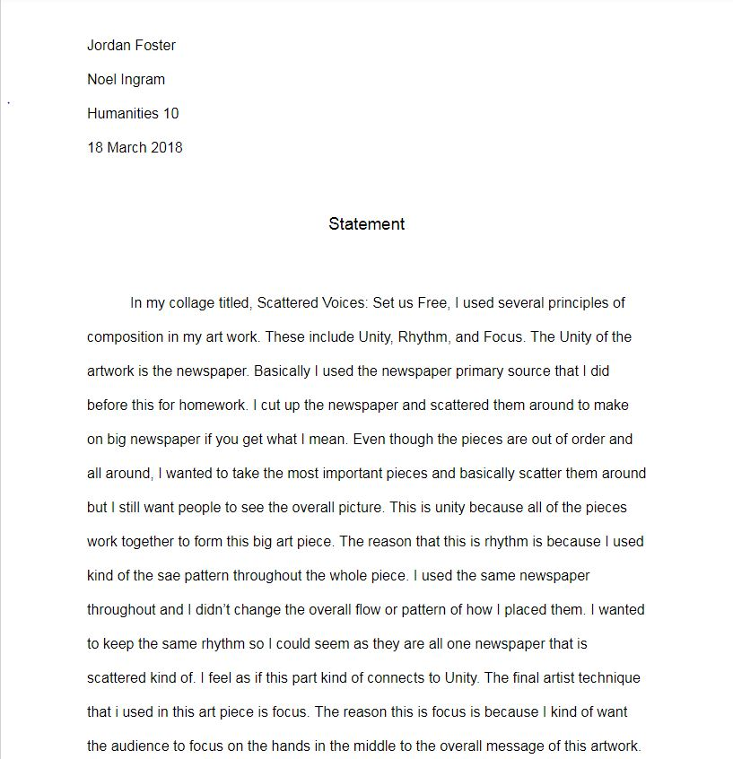
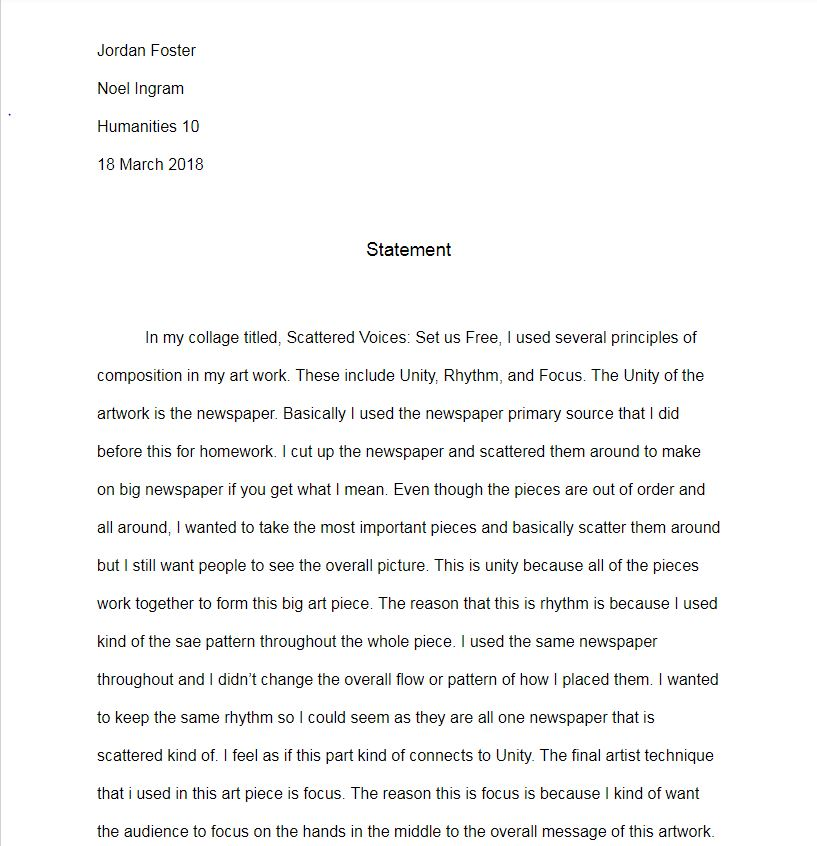

Scarred by the hands because of all of their hard work Tiny fingers dirtied with mud and murky water Their masters telling them to work even harder Treated like some type of objects Looking as if they are created projects
The rusty buckets that hook onto their fingertips
All you can hear is the soft footsteps Groaning everytime they bend down Getting lower and lower to the floor until they cant feel their feet and all they can do is bow The soft breeze filled with smoke Kids looking as if they grew up being broke Without ever given a second chance These kids only get one last glance